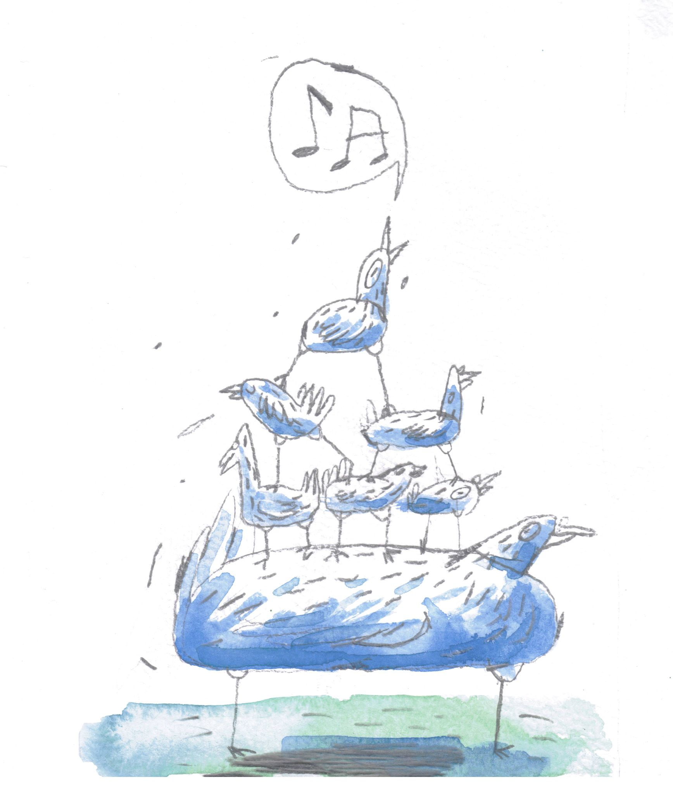

Projet Pigeons is an artistic activistic collective that currently consists out of 60 young talents. Our network connects people with not only different skills, but also different backgrounds and goals. Pigeon hopes to become a general term for several (political) problems such as the cultural subsidy crisis, mental health, BLM, climate change, poverty, …
This platform gives the youth the opportunity to help each other start up their own projects and create a loudspeaker for all who feels like their cries and ideas get walked on by. Or as you could say, for all who feels like “a pigeon”.
The name “Projet Pigeons” derives from the French expression “Etre un pigeon”; “To be a fool”. Only this time, we from PP choose to look at the expression another way and carry the symbol of this animal with pride:
We want to prove the power and vision of the youth not only to the outside world, but also to ourselves.